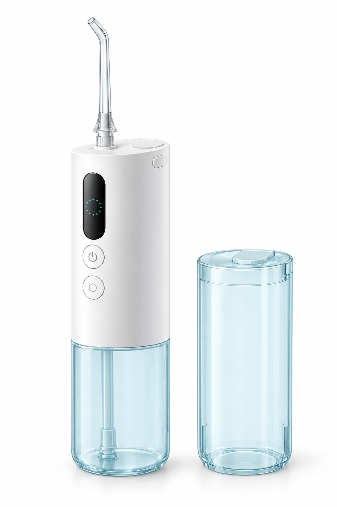
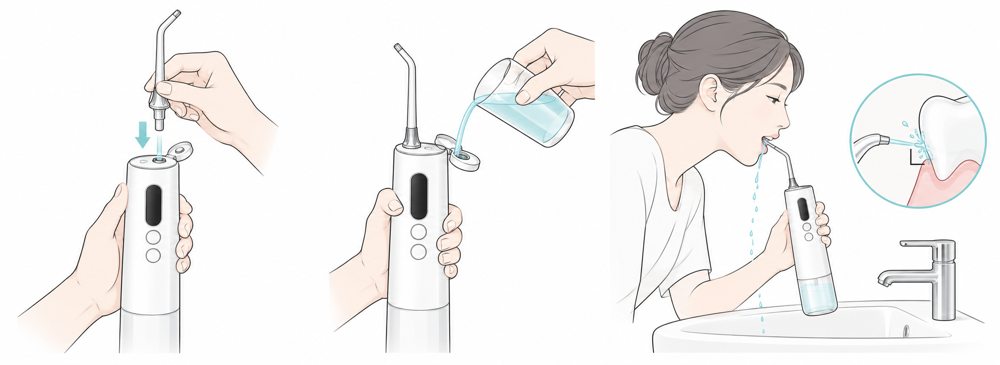

01 / MIJIA SMART WATER FLOSSER PRO
Lần đầu sử dụng,
thật đơn giản
Cần chuẩn bị gì, nên chọn chế độ nào và khi nào thì nhấn nút.
Bắt đầu với chế độ Nhẹ nhàng
Thiết bị mới có cần làm sạch không?
Sách hướng dẫn không yêu cầu tiệt trùng thiết bị hoặc dùng giấm trước lần đầu sử dụng. Tráng vòi phun và bình chứa bằng nước sạch là bước vệ sinh hữu ích, không phải yêu cầu riêng của nhà sản xuất. Không dùng nước sôi, cồn hoặc chất tẩy rửa mạnh.
Sách hướng dẫn không yêu cầu tiệt trùng thiết bị hoặc dùng giấm trước lần đầu sử dụng. Tráng vòi phun và bình chứa bằng nước sạch là bước vệ sinh hữu ích, không phải yêu cầu riêng của nhà sản xuất. Không dùng nước sôi, cồn hoặc chất tẩy rửa mạnh.
Chuẩn bị qua 5 bước
1
Sạc pin trước
Sạc thiết bị trước lần đầu sử dụng. Sạc đầy mất khoảng 4 giờ. Thân máy, cổng sạc và dây cáp phải khô.
2
Tráng bằng nước
Dùng nước sạch dưới 40 °C. Có một ít nước bên trong thiết bị mới là bình thường: mỗi thiết bị đều được kiểm tra tại nhà máy.
3
Lắp vòi phun dạng quạt
Vòi phun đa năng sương mây 2 / 云感多效喷嘴 2. Cắm vòi thẳng đứng cho đến khi nghe tiếng tách.
4
Đổ nước vào bình lớn
Mở nắp trên, giữ thân máy thẳng đứng, đổ nước dưới 40 °C vào rồi đậy nắp.
5
Chọn 轻柔 — Nhẹ nhàng
Dùng nút dưới để đổi chế độ. Đặt vòi phun vào miệng và cúi người trên bồn rửa trước khi nhấn nút trên.
Lần đầu sử dụng
Đánh dấu từng bước khi hoàn tất. Các dấu chọn được lưu trong trình duyệt này.
Không hướng tia nước vào mặt khi bắt đầu. Chỉ bật thiết bị khi vòi phun đã ở trong miệng. Hé môi để nước thoát ra dễ dàng.
Ba bước được minh họa trực quan

Vuốt hình sang ngang: lắp vòi → đổ nước → sử dụng.
1. Cắm vòi phun đến khi khớp2. Đổ nước qua nắp trên3. Đặt vòi vào miệng rồi khởi động
Ban đầu có thể cảm thấy tê râm ran hoặc chảy máu nhẹ; sách hướng dẫn mô tả đây là giai đoạn thích nghi. Nếu khó chịu kéo dài hơn 2 tuần, hãy ngừng sử dụng và hỏi ý kiến nha sĩ. Nếu thấy đau, không tăng áp lực nước.